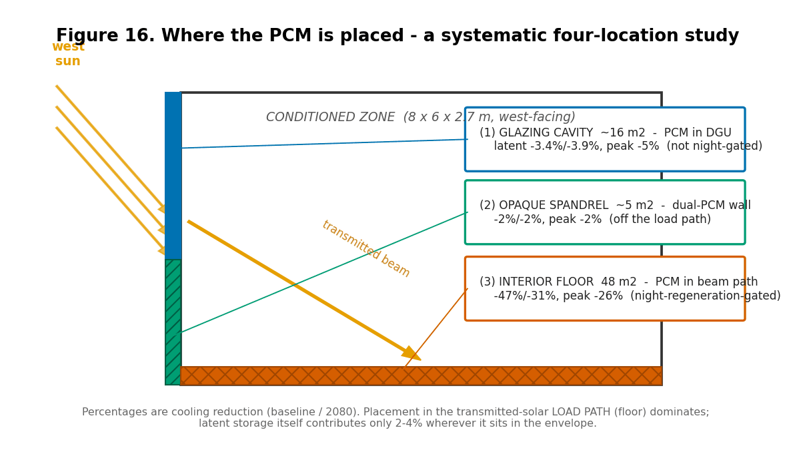
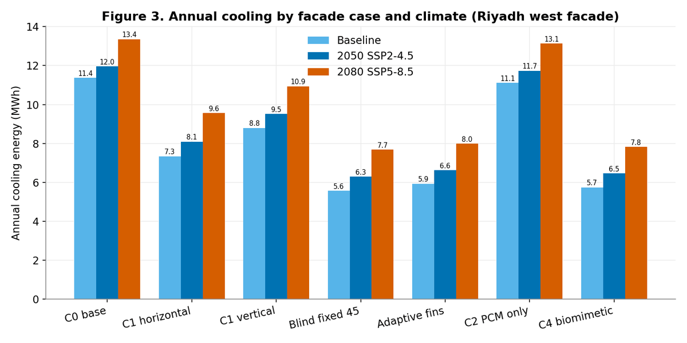
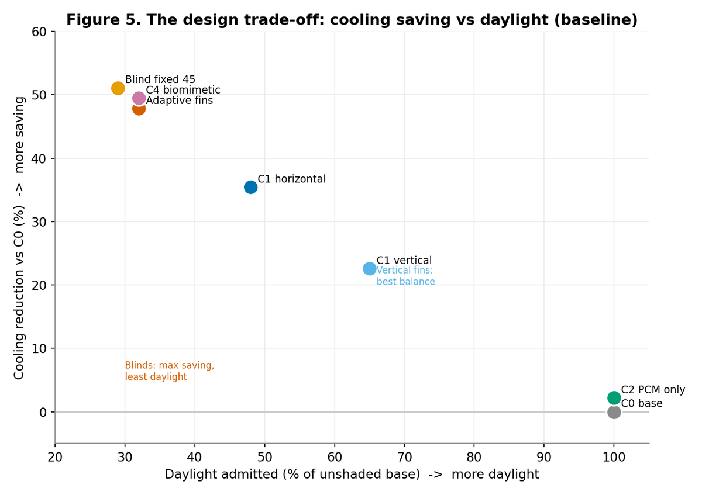
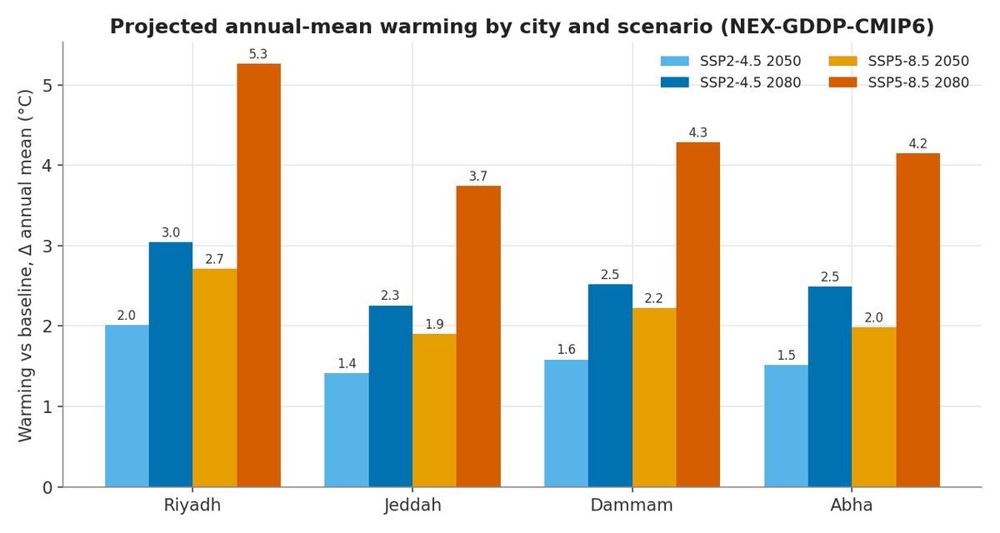
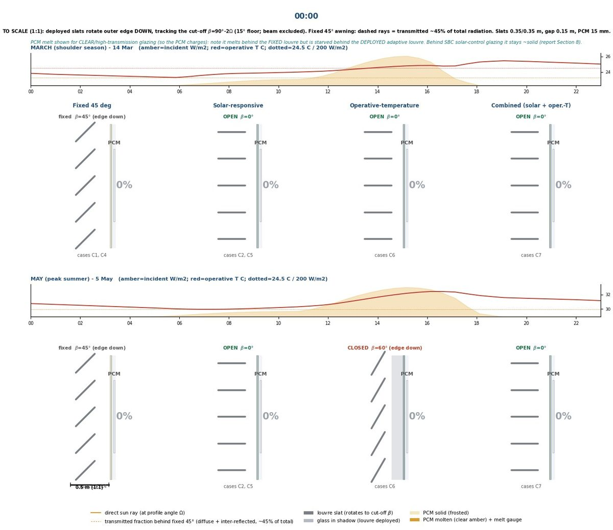
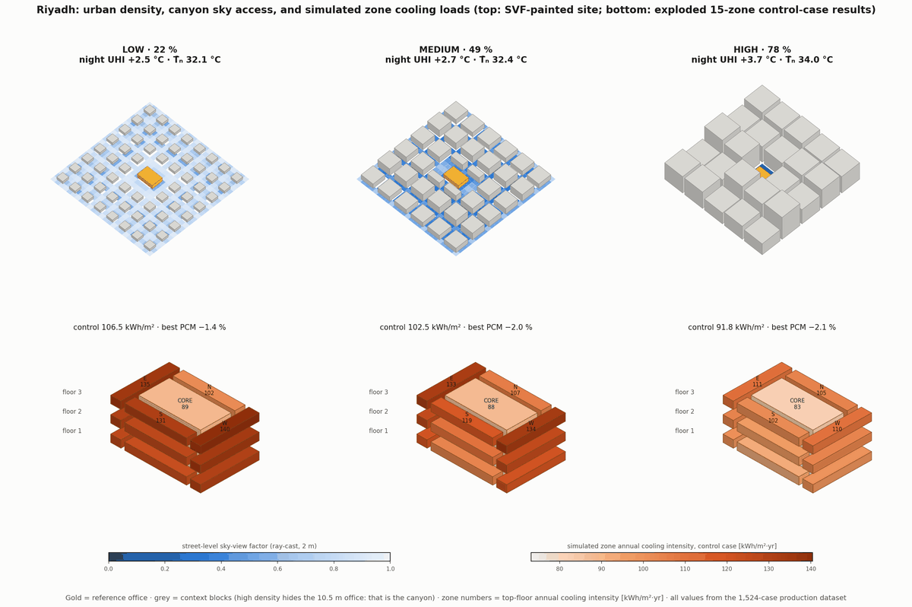

Phase-change materials, from façade to city block
A controlled EnergyPlus experiment on a west-facing Riyadh façade under present, 2050 and 2080 climates — finding that where PCM sits matters far more than how much of it there is.






Phase-change materials store and release heat as they melt and solidify, flattening the temperature swing across a façade. Whether they actually do this depends on control: if the material never fully charges or never discharges, it is inert mass.
The façade study locks the ANSI/ASHRAE Standard 140 Case 600 reference building and varies only the west façade, so every difference is attributable to the façade itself. West is chosen as an adversarial orientation — intense low-angle sun in the late afternoon, coincident with peak outdoor temperature and peak utility demand. Eighteen runs (six cases × three climates) completed in EnergyPlus 25.2, with future weather generated by two independent methods that agree within 0.3–0.5 °C.
Two results drive the work. Solar control dominates: fixed louvres cut annual cooling 23–35% and a deployable exterior blind roughly 51%, and those savings largely survive to 2080. PCM placement, tested systematically across four locations, turns out to be decisive in a way capacity is not — the identical material cuts cooling about 2% in the opaque spandrel, 3–4% in the glazing cavity, but 47% when placed in the transmitted-beam path on the floor.
The failure mode matters as much as the saving. Riyadh summer nights now sit at 30–33 °C, warmer than the cooled zone, so passive night ventilation and overnight PCM regeneration cannot run — and the floor placement's benefit erodes from −47% to −31% by 2080 for exactly that reason. Daylight analysis exposes a second tension: external louvres give the best usable daylight but barely control view glare, while blinds and adaptive fins control glare by over-blocking daylight. No single passive device does both.
At urban scale the same question is asked of a Riyadh block: how density and street-level sky-view factor drive the cooling demand that any façade strategy then has to meet.
Alammar, A., Alymani, A. A., Alsofiani, M., Murugesan, L. & Latif, E. (2026). Towards Climate-Resilient Office Façades: Integrating PCM-Enhanced Glazing with Dynamic External Louvres Under Current and Future Hot–Arid Climates. Sustainability, 18(19), 10168.